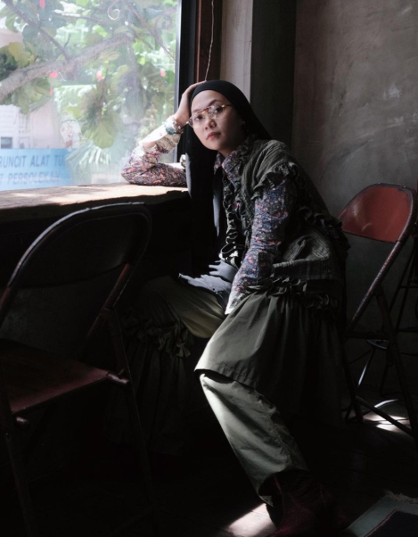

About Us
Founder
Hi! I’m Izza, 28 years old this year and I’m the founder of Serba Serbi. I’ve always been passionate about fashion, music ( I love the violin) designing spaces and being a part of the creative community. My love for vintage items, music and the whole aesthetic has always been a part of me since young and it definitely bloomed during covid when I had plenty of time to myself. I hosted my first event in 7&8th March, from there on I was able to connect with other creatives who had similar goals and now I find myself in a beautiful supportive community including my Serba Serbi Team which I’m extremely grateful for! I’m also a proud mother to my beautiful daughter Mawar, she keeps me going in life and inspires me to stay curious, always, and also my loving husband!
Serba Serbi

Serba Serbi is a vintage & retro-inspired bazaar for those who enjoy stylish things. Featuring pre-loved clothing, music, coffee, food and more, Serba Serbi began as a curated yard sale in Kajang, Selangor which quickly grew into a celebration for young people to discover and define their own personal style. Event pop-ups happen around different states in malaysia - KL, Penang, Johor etc.

“ Fashion, music and the culture that surrounds it ”